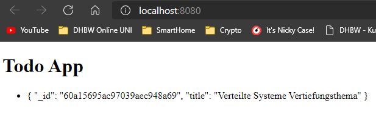
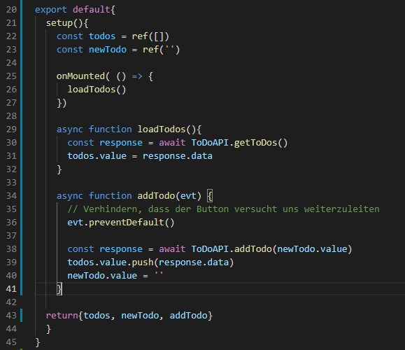

Vertiefungsthema
Wie auch im letzten Semester muss auch dieses Mal wieder ein Vertiefungsthema erarbeitet werden. Dieses muss zwar nicht zwingend zum Fokus der Vorlesung (Serverseite Einwicklung) passen, sollte aber zumindest mit Webentwicklung zu tun haben.
Im letzten Semester habe ich mir das JS-Framework React n√§her angeschaut. In der Zwischenzeit bin ich jedoch auf Vue.js umgestiegen. Es ist meiner Meinung nach einfacher zu verwenden und bietet eine noch bessere Dokumentation als React. Jetzt m√∂chte ich allerdings nicht noch ein weiteres Frontend Framework vorstellen, weswegen ich mir √ºberlegt habe mir etwas "Greifbareres" anzuschauen aka. viel zu viel Aufwand betreiben und anstelle eines kleinen Projektes ein eigentlich viel zu gro√ües starten üòÅ.
Privat habe ich mich bereits etwas mit Vue.js und (zwingendermaßen) Node beschäftigt. In unserer Datenbankvorlesung haben wir uns MongoDB angesehen. Jetzt fehlt eigentlich nur noch ein Puzzelteil zum Full-Stack und das ist Express.
Das Resultat ist ein MEVN Stack.

Okay, und was bauen wir jetzt genau?
Gute Frage. Ich habe mich entschlossen diesmal einen Klassiker zu bauen - eine Todo Liste. Diese soll aus den Folgenden Komponenten bestehen.
- Ein Vue.js Frontend, dass Einträge ausgeben, erstellen und löschen kann.
- Ein Express Backend, dass die Kommunikation mit unserer Datenbank übernimmt.
- Eine MongoDB Datenbank, die unsere ToDo Einträge speichert.
Let's go - Projekterstellung
Wir starten mit der Projekterstellung. Node und Vue-CLI (Command-Line-Interface) habe ich bereits auf meinem Computer installiert. Ich erstelle nun einen Ordner "Vertiefungsthema". Hier werden unsere Client und Server Projekte leben.
Client-Projekt
Als erstes erstellen wir unser Client Projekt. Wir nutzen für alles Visual Studio Code und schreiben folgendes in das integrierte Terminal:
vue create todo-app-client
Wir erstellen hier ein neues Vue 3 Projekt mit dem Namen "todo-app-client". Vue-CLI erstellt das Projekt und wir können in den neu erstellten Projektordner wechseln.
Ein Vue Projekt besteht immer aus den folgenden Komponenten:
- Einem Public Ordner mit einer index.html (der Einstiegspunkt für unsere Anwendung) und
- einem src Ordner mit dem eigentlichen Anwendungscode (Komponenten, Bilder, JavaScript Code, etc.).
Wie man anhand der Ordnerstruktur erahnen kann ist auch Vue (ähnlich wie React) komponentenbasiert. Um dieses Vertiefungsthema jedoch so simpel wie möglich zu halten lösche ich die im nebenstehenden Bild enthaltenen Ordner assets und components. Unsere App wird nur eine Seite enthalten und dort (um es möglichst einfach zu halten und sich nicht mit dem Emiten von Events etc. auseinander setzen zu müssen) auch erst einmal keine Komponenten enthalten.
Nun überarbeiten wir die App.vue Datei sodass diese keines der soeben gelöschten Bilder und Komponenten mehr verwendet. Die resultierende Datei sieht folgendermaßen aus.
<template>
Test
</template>
<script>
export default{
setup(){
}
}
</script>
<style>
</style>
Kurz zur Erklärung des Aufbaus: .vue Dateien bestehen aus drei Teilen:
- Dem template Teil, welcher den HTML Code beinhaltet,
- dem skript Teil, welcher den JavaScript bzw. Vue Code beinhaltet und
- Dem style Teil, der das CSS beinhaltet.
Im Skript Teil befindet sich hier außerdem noch eine setup Methode, die zur Vue Composition API gehört - eine neuere Art Vue Komponenten zu schreiben.
Wir können nun unsere App mit npm run serve starten und tada - eine wunderschöne Website *Sarkasmus aus*.
Server-Projekt
Unser Client-Projekt ist erstellt. Nun geht es an das Express Backend. Dazu wechseln wir zurück zum Ordner "Vertiefungsthema" und erstellen dort den Ordner "todo-app-server".
Auch hier öffnen wir wieder ein Terminal. Dort schreiben wir npm init um den Package Manager von Node zu initialisieren und durchlaufen das Setup mit ein paar Mal Enter (dadurch werden die Standardeinstellungen übernommen). Nun machen wir uns noch das Leben ein Wenig leichter, indem wir mit npm install --save nodemon nodemon installieren. Dieses Paket startet den Node Server immer neu, sobald wie eine Datei speichern. Damit wir diesen jedoch nicht jedes Mal kompliziert aufrufen müssen fügen wir das Tool zum Startskript unserer (durch den ersten Schritt erhaltenen) package.json unter der Sektion "scripts" hinzu. Außerdem fügen wir den Punkt "type" hinzu und setzen ihn auf module, sodass wir die (aus meiner Sicht) schöneren ES6 import Funktionen verwenden können und nicht mit require arbeiten müssen.
Nachdem wir nun unser Node Projekt haben, installieren wir Express und drei weitere Dependencies in unser Projekt. Im Bild oben sind diese bereits enthalten, da es ein Wenig gedauert hat sie zum Laufen zu bekommen und es unnötig kompliziert gewesen wäre wieder alles zu deinstallieren, nur um einen schöneren Screenshot hinzubekommen.
npm install --save express body-parser cors morgan
Wie im letzten Bild zusehen war starten wir mit dem Startskript eine app.js im Ordner src. Diese müssen wir nun anlegen.
// Dependencies importieren
import express from 'express'
import bodyparser from 'body-parser'
import cors from 'cors'
import morgan from 'morgan'
// Express App erstellen
const app = express()
// Dependencies einbinden
app.use(morgan('dev'))
app.use(bodyparser.json())
app.use(cors())
// Server soll auf 8081 lauschen (Client läuft auf 8080)
app.listen(process.env.PORT || 8081)
Hier importieren wir die Dependencies, erstellen eine neue Express App, binden die vorher installierten Dependencies ein und lassen den Server auf Port 8081 lauschen. Das funktioniert auch super, jedoch gibt uns der Server in der aktuellen Form nichts zurück, sollten wir uns mit einem Browser verbinden.
Wir stellen nun also etwas über HTTP GET zur Verfügung. Das tun wir mit app.get.
app.get('/', (req, res) => {
res.send([
'Todo 1',
'Todo 2'
])
})
Diese Methode akzeptiert (zumindest in unserem Beispiel - es gibt weitere Überladungen) zwei Parameter. Den Pfad (hier '/') und eine Callback Funktion. Hier stehen die zwei Objekte req (Request - das was erhalten wurde) und res (Response - das was wir zurücksenden) zur Verfügung.
In unserem Beispiel senden wir ein Array mit Todo 1 und Todo 2 zurück, falls ein HTTP GET auf localhost:8081/ gesendet wird.
Wir haben nun einen Server, der uns 2 Todo Einträge zurücksendet. Somit können wir wieder zurück zum Client und dort weiter machen.
Eine Verbindung vom Client zum Server Aufbauen
Wir haben nun einen sehr rudimentären Server. Unser Client muss sich nun mit diesem verbinden, um an Daten zu gelangen. Dafür nutzen wir das npm Paket Axios.
npm install --save axios
Wir erstellen also einen Ordner mit dem namen "services" im src Ordner unseres Client Projektes. Dort erstellen wir nun die Datei "ToDoAPI.js". Sie importiert Axios, stellt die URL ein und exportiert eine Methode, um auf die ToDos zugreifen zu können.
import axios from 'axios'
api = axios.create({
baseURL: 'http://localhost:8081/'
})
export default {
getToDos() {
return api.get('')
}
}
Nachdem wir nun unsere API haben, müssen wir diese in unsere App importieren und die Antwort verwerten. Dazu ändern wir unsere App.vue folgendermaßen ab:
In der Template Sektion erstellen wir simple HTML Liste mit einem Listenelement. Dieses bekommt die Attribute v-for und :key. Beide sind aus Vue. Ersteres iteriert über ein vorgegebenes Array und erzeugt so viele Elemente wie Array Elemente vorliegen. Der Syntax erinnert tatsächlich etwas an die JS Funktion foreach. Damit die erzeugten Elemente allerdings eindeutig identifizierbar sind und von Vue dynamisch aktualisiert werden können müssen wir mit :key noch einen Schlüssel vergeben. Der Doppelpunkt ist hier die Kurzschreibweise für v-bind und bindet, wie der Name es schon suggeriert ein Attribut an eine Variable. Vorläufig können wir hier den Array Index verwenden, jedoch wird der auf Dauer nicht eindeutig sein bzw. sich verschieben. Aber dazu später mehr. Die Geschweiften Klammern im darunter stehenden span Tag ermöglichen es uns auf die Variable todo (der aktuelle Eintrag) zuzugreifen. Sie werden auch Mustache Syntax genannt.
Im Skript Teil wird es nun interessant. Wir importieren erst die Methoden onMounted und ref aus Vue. Ersteres ist ein sogenannter Lifecycle Hook (Link führt zu allgemeinen Doku - In der Composition API sehen sie etwas anders aus). Dieser wird, in diesem Fall, ausgeführt sobald die Anwendung gemounted bzw. in den DOM eingehongen wird. Ref ist eine Wrapper Klasse die sich um die Reaktivität der von uns verwendeten Daten kümmert. Außerdem finden wir hier unsere ToDoAPI wieder. Das @ steht hier für unseren src Ordner.
Wir erstellen nun eine Konstante für unsere todos welche ein Ref Objekt beinhaltet. Dieses beinhaltet initial ein leeres Array. Wenn nun die Anwendung gemounted wird, laden wir unsere Todos. Diese Funktion ist asynchron. In ihr warten wir auf die Antwort unserer API und setzen danach unsere todos auf die Daten der Antwort.
Am Ende geben wir unsere todos nach außen weiter, sodass wir im Template Teil darauf zugreifen können.
Das Ergebnis kann sich schon sehen lassen. Unser Frontend kommuniziert mit dem Backend und stellt die Antwort als Liste dar.
Die Datenbank
Aufsetzen der Datenbank
Front- und Backend steht, allerdings arbeiten wir noch mit einem "gehardcodeten" Array des Backends. Was fehlt ist unsere Datenbank in der wir die Daten ablegen können. Glücklicherweise bietet MongoDB einen kostenlosen Datenbankservice an, sodass wir diese nicht lokal aufsetzen müssen. Wir erstellen also erst unseren Testcluster.
Anschließend können wir unsere Datenbank und unseren Datenbank Nutzer erstellen und unsere IP zu einer Whitelist hinzufügen.
Das Backend mit der Datenbank verbinden
Die Datenbank ist live, einen User haben wir auch. Es ist an der Zeit, das Backend zu verbinden. Dazu installieren wir erst einmal mongodb in das Backend Projekt.
npm install —-save mongodb
Jetzt importieren wir MongoDB noch in unsere app.js und schreiben eine Methode für den Verbindungsaufbau. Glücklicherweise gibt es diese schon fertig auf der MongoDB Website. Wir ändern lediglich unser Passwort, den Namen der Datenbank (test) und übergeben "unsere hergestellte Verbindung" zur Datenbank in eine globale Variable mongoClient.
Anschließend ändern wir unsere app.get Methode insofern ab, als das wir jetzt eine Abfrage auf unsere Collection starten und das Ergebnis dieser Abfrage zurückgeben.
Bevor ich den Server nun wieder starte, füge ich über das MongoDB noch einen Testeintrag hinzu. Et voilá, wir haben einen Eintrag aus der MongoDB im Frontend.
Nun sollte auch klar sein, was wir wohl als Key für die Liste im Frontend nehmen werden.

Daten in die Datenbank schreiben
Nun können wir aus der Datenbank lesen. Was noch fehlt ist das schreiben.
Frontend
Dazu beginnen wir im Frontend. Wir erstellen ein HTML Formular mit einer Textbox und einem Button und eine weitere asynchrone Methode die mit unserer API kommuniziert.
Auch hier kommen wieder ein paar Vue spezifische Dinge zum Einsatz. Als Erstes @submit, die Kurzform für v-on:submit. Hiermit lassen sich Events abfangen und direkt mit Methoden verbinden. Außerdem kommt hier noch v-model zum Einsatz. Dies funktioniert ähnlich wie v-bind, jedoch in beide Richtungen. Perfekt also für Formulare.
Im Skript Teil müssen wir nun die Variable newTodo und die Methode addTodo bereitstellen. Da wir im Formular auch das Event als Parameter übergeben haben können wir hier auch direkt preventDefault() ausführen um ein "Versenden" des Formulars zu unterbinden. Anschließend stellen wir eine Anfrage an unsere API und übergeben den aktuellen Wert von newTodo. Wenn nun die Antwort zurück kommt, aktualisieren wir unser lokales todos Array und setzen den Wert von newTodo auf einen leeren String.
Anschließend überarbeiten wir noch kurz unsere API.
Backend
Damit unser Backend nun etwas mit unserem neuen API Call anfangen kann müssen wir eine post Methode hinzufügen.

Hier horcht unser Server am Pfad "/addTodo". Wenn Daten empfangen werden, wird der Todo aus dem Request in eine lokale Variable geschrieben und mit collection.insertOne in die Datenbank geschrieben. Der JavaScript Syntax ist tatsächlich dem Systax der MongoShell (eigene Shell der Datenbank) sehr ähnlich, was es uns hier sehr einfach macht. Dazu, dass die MongoDB einen relativ einfachen/sprechenden Syntax hat. In der Callback Methode schicken wir nun den neu eingefügten Eintrag zurück zum Frontend - nun als Dokument aus der Datenbank.
Es funktioniert.
Todos abschließen
Wir können nun Todos hinzufügen und anzeigen. Das Einzige, dass noch (zumindest funktionell) fehlt ist eine Möglichkeit sie abzuschließen.
Frontend
Dazu überarbeiten wir unser Frontend ein weiteres Mal und fügen Checkboxen hinzu.
Diese Checkboxen erhalten außerdem ein @click mit dem wir eine deleteTodo Methode ausführen die die ID des Eintrags als Parameter bekommt. Außerdem ändern wir noch todo zu todo.title in den geschwungenen Klammern, da das einfach schöner aussieht (und kein User des Frontend etwas mit der ID anfangen kann).
Natürlich muss auch hier wieder eine entsprechende Methode im Skript Teil und unserer API geschrieben werden.
App.vue
ToDoAPI.js
Backend
Last but not least müssen wir natürlich auch unserem Backend die Möglichkeit geben auf die Anfrage zu reagieren.
Hier nutzen wir analog zur add Methode collection.removeOne um ein Dokument aus der Datenbank zu löschen.
Der finale Test
Jetzt ist unsere Todo Anwendung funktional fertig. Wir können sie nun testen. Vor dem Test habe ich noch ein Wenig mit dem CSS herumgespielt. Ich bin allerdings nicht gerade ein "Designer" und so sieht das Ganze dann auch aus.